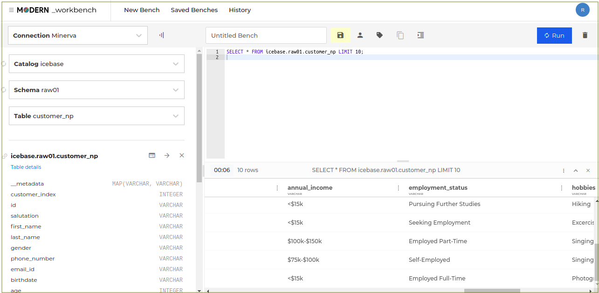

Tutorials¶
Submitting a workflow to run job(s) on CLI¶
You can define workflows to carry out large-scale data processing. The workflows can have one or more jobs and are created as a sequential YAML. This example shows how to define a Flare job in a workflow to ingest customer data into DataOS. Once the job is successfully run, you can access this data for further analysis and processing in DataOS.
Log in to DataOS CLI¶
Before login, ensure that DataOS is initialized.
Create a workflow¶
To define a workflow for your Flare job you want to run, you have to provide various configuration values in key-value pair in yaml file.
To learn more about creating Flare jobs, Refer Flare documentation.
Note: Ensure that necessary Depot definitions are created to enable read & write of the data.
To learn more about creating Depots, Refer Depot documentation.
For this example, a sample yaml file (config_v2beta1.yaml) is given below for a Flare job to ingest data from a CSV file.
version: v1beta1
name: wf-cust-demo-np # workflow name
type: workflow
tags:
- Connect
- Customer
description: The job ingests customer data from dropzone into raw zone
workflow:
dag: # dag contains job definitions
- name: customer
title: Customer Dimension Ingester
description: The job ingests customer data from dropzone into raw zone
spec:
tags:
- Connect
- Customer
stack: flare:1.0
tier: connect
flare:
driver:
coreLimit: 1200m
cores: 1
memory: 1024m
executor:
coreLimit: 1200m
cores: 1
instances: 1
memory: 1024m
job:
explain: true
inputs: # input CSV file details
- name: customer_connect
dataset: dataos://thirdparty01:none/customer?acr=r # relative path of the file in the Depot that you want to read
format: csv
schemaPath: dataos://thirdparty01:none/schemas/avsc/customer.avsc
logLevel: WARN
outputs:
- name: output01
depot: dataos://icebase:raw01?acr=rw # location where the data is saved in DataOS: in the form dataos://catalog:schema
steps:
- sink:
- sequenceName: customers
datasetName: customer_np # output table name
outputName: output01
outputType: Iceberg
description: Customer data ingested from external csv
outputOptions:
saveMode: overwrite
iceberg:
properties:
write.format.default: parquet
write.metadata.compression-codec: gzip
tags:
- Connect
- Customer
title: Customer Source Data
# in the following section, you can perform some transformations on the data
sequence:
- name: customers
doc: Pick all columns from customers and add version as yyyyMMddHHmm formatted
timestamp.
sql: SELECT *, date_format(now(), 'yyyyMMddHHmm') as version, now() as
ts_customer FROM customer_connect
functions:
- name: rename
column: Id
asColumn: id
Create your own workspace¶
This is an optional step. you can always run your Flare jobs in “public workspace”.
dataos-ctl workspace create -n <name of your workspace>
Check and submit the workflow¶
- As an intermediate step, you can check if your workflow is valid by running the following command.
dataos-ctl apply -f <address of the job you created> -w <name of the workspace> -l
% dataos-ctl apply -f dataos-resources/flare/connect-customer-iceberg/config_v2beta1.yaml -w public -l
Output on the screen:
...
...
...
INFO[0001] 🔧 applying wf-cust-demo-np:v1beta1:workflow...valid
dataos-ctl apply -f <address of the job you created> -w <name of the workspace>
Check the workflow status¶
You can take a look to the status of the workflow to check Running/Succeeded/Failed jobs.
dataos-ctl get -t workflow -w <name of the workspace> -n <workflow name>
The output may look like this:
apple@ dataos % dataos-ctl get -t workflow -w public -n wf-cust-demo-np
INFO[0000] 🔍 get...
INFO[0003] 🔍 get...complete
NAME | VERSION | TYPE | WORKSPACE | STATUS | RUNTIME | Owner
--------------------------|---------|----------|-----------|--------|----------------|-----------
wf-cust-demo-np | v1beta1 | workflow | public | active | succeeded | Rakeshv19
Get the logs¶
CLI provides the log command for the Flare Workflow to keep track of important events. The output generated on the screen will help you to know the cause of error if any job execution in the workflow is failed.
dataos-ctl log -t workflow -w <name of the workspace> -n <name of the workflow>
> *Note: If you want to see the logs stream when the job is still running, just add -f at the end of the *log* command given above.*
Run dataos-tool job¶
This is a mandatory step when your Flare job is writing data in Iceberg format.
- Create a workflow containing dataos-tool job to see the ingested data in the workbench.
- Ensure the path for the output.
- Submit this workflow for execution and get the status of the workflow as described in earlier sections.
For this example, a sample yaml file (datatool_v2beta1.yaml) is given below.
version: v1beta1
name: dataos-tool-customer-np
type: workflow
workflow:
dag:
- name: dataos-tool-customer-01
spec:
stack: toolbox
toolbox:
dataset: dataos://icebase:retail/customer?acl=rw
action:
name: set_version
value: latest
Note: Please contact administartor to get the proper privileges and policies added with your user profile to run the dataos-tool. The tag- tagdataos:u:toolbox-user will be required to run tool job.
View the ingested data¶
- Launch DataOS instance and go to Workbench.
dataos-ctl view -a workbench - In the DataOS workbench, select catalog, schema and table. The data will be visible in the workbench.

Delete the workflow¶
You should delete the workflow from the environment, after your job is successfully run. The workflow, otherwise, will keep floating in the environment for three days.
dataos-ctl delete -t workflow -w <name of the workspace> -n <name of the workflow>